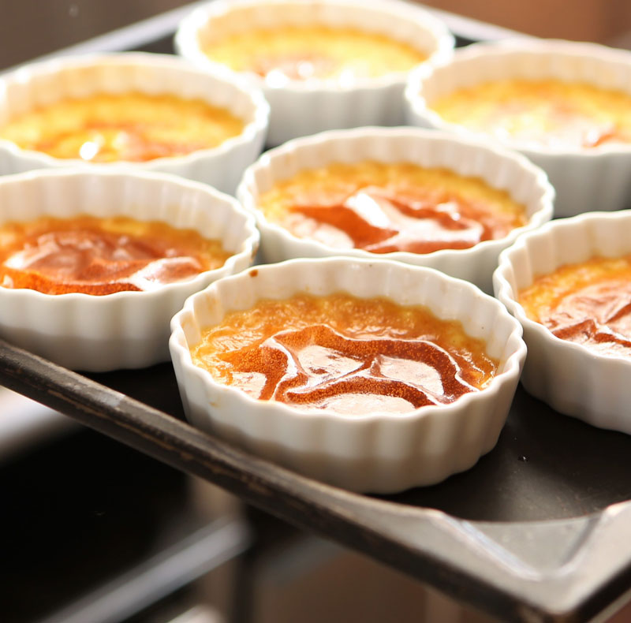
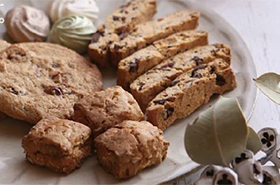
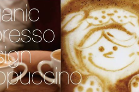

HOME
ABOUT
MENU
ACCESS

Pickup News
Our Journal
Feb.08,2018
今日はかわいい新メニューのご紹介！ 卵・乳製品を使用せず有機食材で作った美味しいクッキーです。

Feb.02,2018
オーガニックパティスリー物販コーナーのお知らせです！

Aug.23,2018
【特別企画】オーガニックカフェsoilワークショップ vol.02のお知らせです。